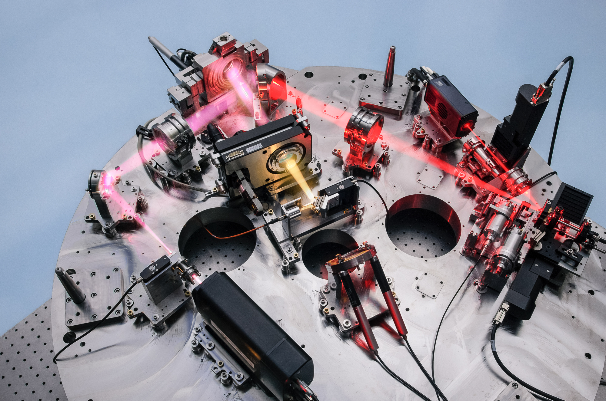
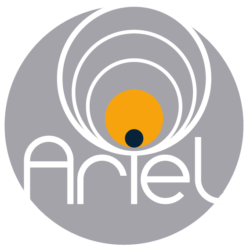
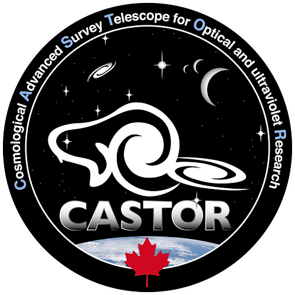

Click here for a full publication list on NASA ADS.
An Unconventional Multi-Planet System and its
Implications for Sub-Neptune Formation Models
Multi-planet systems of sub-Neptune-sized planets commonly contain smaller inner planets than their outer planet counterparts. This pattern is commonly reproduced by conventional models of planet formation that are largely successful at reproducing the observed small planet population. While stochasticity can produce inverted planet pairs (i.e. the inner planet is larger), conventional formation models struggle to produce compact systems of inverted planet pairs that show drastically distinct bulk compositions (i.e. rocky, H/He-enveloped, or water-rich). Enter TOI-1266, a newly characterized inverted planetary system of a H/He-enveloped inner planet and a temperate water-world. The system's peculiar architecture is decidedly unique among M dwarf systems and challenges models of sub-Neptune formation and atmospheric escape. Our team conducted an intensive radial-velocity campaign and detailed hydrodynamical modeling to shed light on the system's puzzling architecture, revealing a unique and interesting test case of inside-out sub-Neptune formation at pebble traps.
The Radius Valley around Low Mass Stars from Kepler and K2
Observational studies of the occurrence rate of close-in planets around Sun-like FGK stars revealed a bimodality in the distribution of planetary radii known as the radius valley. The FGK star radius valley likely marks the transition between rocky super-Earths and larger H/He-enveloped sub-Neptunes. The slope of the radius valley in period-radius space also encodes the physical mechanism by which close-in planets accrete and retain their primordial H/He envelopes. Here, we build upon the results for planets around FGK stars by studying the population of close-in planets orbiting 17,393 mid-K to mid-M dwarfs from Kepler and K2, around which a significantly distinct radius valley slope is uncovered. This evoluation in the radius valley's slope with stellar mass hints that the dominant physical mechanism that sculpts the radius valley may switch from a thermally driven atmospheric escape process around FGK stars, to being a direct outcome of the planet formation process around M dwarfs. This work sets the stage for understanding the prominence of the atmospheric mass loss across the main sequence and for establishing whether we are witnessing the emergence of a separate channel of planet formation in the low stellar mass regime.
Telscopes & Instruments
NIRPS
I am a core science team member of
NIRPS, the
Near-Infrared Planet
Searcher . NIRPS is a high-resolution near-infrared spectrograph at the ESO 3.6m telescope in La Silla,
Chile and is optimized to detect and characterize small planets orbiting M dwarfs stars using the radial
velocity method.
NIRPS serves as the "red arm" of the optical spectrograph HARPS, which when operated simultaneously, provides
extremely precise chromatic radial velocity measurements that enable astonomers to disentangle tiny planetary
signals from stellar activity.
(Credit: N. Blind/Geneva Observatory/NIRPS/ESO Consortium)
SPIRou
SPectropolarimètre InfraROUge
(SPIRou) is a near-infrared spectropolarimeter located at the
Canada-France-Hawaii Telescope (CFHT) on Maunakea in Hawaii. SPIRou is optimized for high-precision
radial velocity measurements of M dwarfs and is commonly used to find/characterize exoplanets and study
stellar magnetic fields.
We also use SPIRou in our group to measure the detailed elemental abundances of M dwarfs to inform our
understanding of the interior compositions of the super-Earths and sub-Neptunes that orbit them.
(Credit: É Artigau)
TESS
NASA's
Transiting Exoplanet Survey Satellite (TESS) mission is a multi-year,
all-sky survey searching for the closest exoplanets to the solar system using the transit method.
TESS's regular public data releases are a fixture of much of the research being done in our group. I am also
a member of the TESS Follow-up Observing Program (TFOP), which conducts a variety of follow-up observations
to confirm TESS planet candidates, including the precise measurement of planet masses using the radial
velocity method.
(Credit: NASA/JPL-Caltech)
Ariel (planned 2029)
I am a member of
CAST, the Canadian Ariel Science Team, in support of the European Space Agency's
Ariel mission (Atmospheric
Remote-sensing Infrared Exoplanet Large-survey). Ariel will study the atmospheres of about a thousand
planets around other stars, including rocky planets and gas giants, to discover the chemical ingredients that
make up their atmospheres. The mission will also study planets' clouds and atmospheric dynamics by
monitoring variations over time.
(Credit: ESA/Ariel)
CASTOR (planned 2030s)
The
Cosmological Advanced Survey Telescope for Optical and UV Research
(CASTOR) is a proposed Canadian flagship mission with the Canadian Space Agency. CASTOR's unique
photometric and spectroscopic capabilities in the UV to the blue-optical will address a wide
range of topics from the solar system to cosmology.
I am a CASTOR science team member focusing on the Stellar Astrophysics and Exoplanets working groups.
(Credit: NRC/CASTOR)